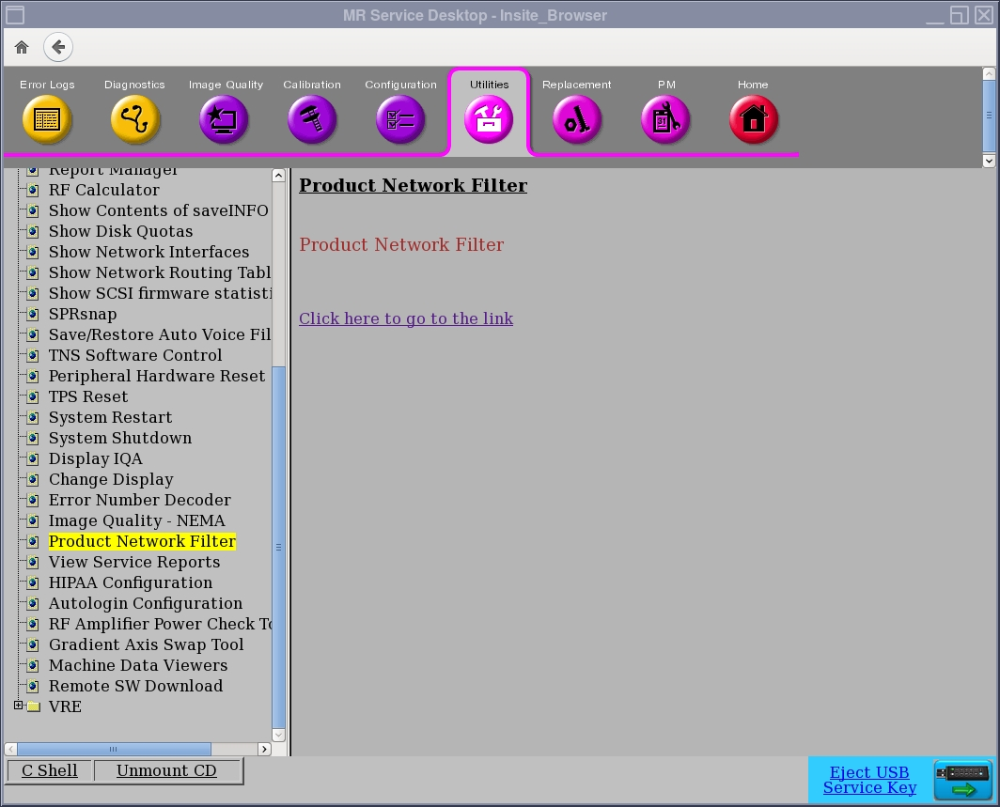
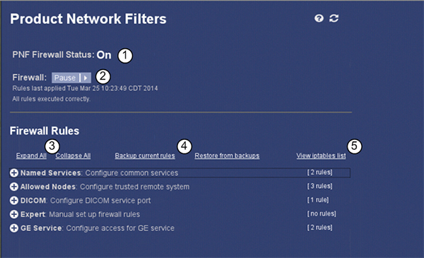
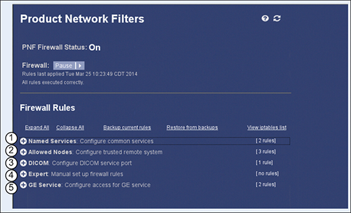
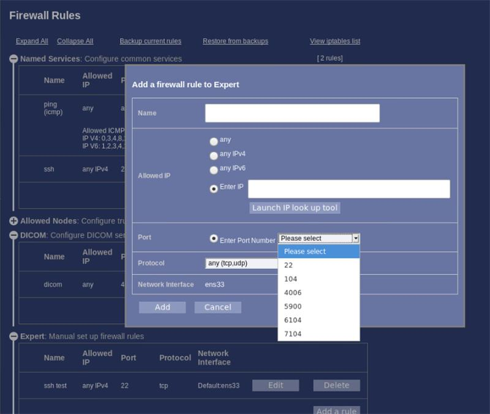
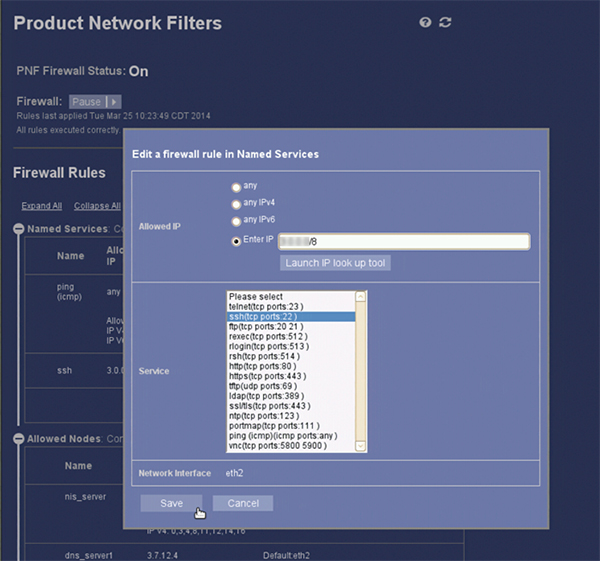
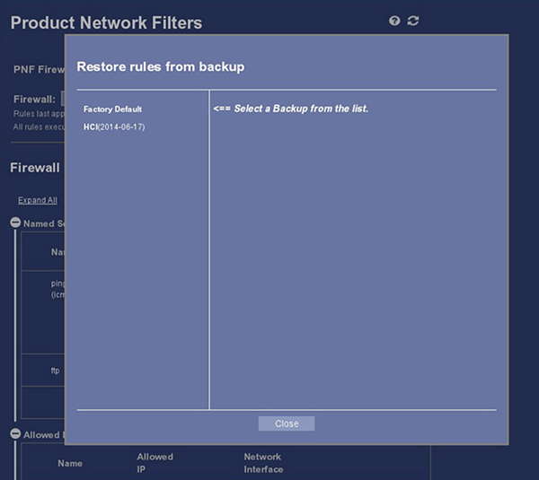
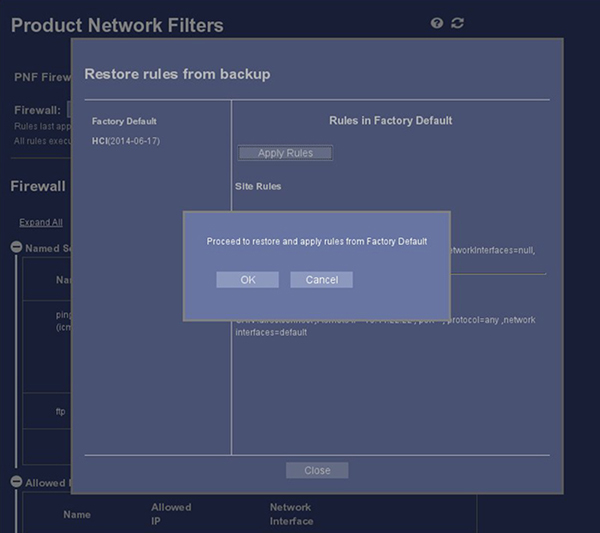

- 00000018WIA30086E50GYZ
- id_20284511.23
- Jul 28, 2025 5:48:25 PM
Product Network Filters (PNF) for software version 29.0 and later
Use these steps to set filters that restrict which system services are allowed to be controlled by other devices trying to access the Operator console.
Overview
Product Network Filters (PNF) is a software firewall tool that lets a site Network Administrator control traffic from the site's internal network to the Diagnostic Imaging System. This tool was created in response to the customer's need for security.
Upon installation, PNF automatically enables itself to start after every reboot by default.
- To be able to make changes to the PNF, log on with an Enterprise Authentication Authorization Audit (EA3) user account that is a part of the Administrator group. Some features are only available when logged on with a Class M SSA key or with Research Option Key.
- Click the Utilities tab on the Common Service Desktop (CSD) and select Product Network Filter.
Figure 1. Main PNF screen 
- Click Click here to go to the link.
Figure 2. Product Network Filters screen  Note When accessing PNF configuration, the firewall status shows Pause, but is still turned On.
Note When accessing PNF configuration, the firewall status shows Pause, but is still turned On. - The main page of PNF configuration will show.
Figure 3. Configure PNF screen 
Item Description 1 Firewall Status: Shows current firewall status. 2 Firewall State: Use to turn firewall On or Off. Choices: Turn Off or Restart. 3 Expand and Collapse All: Selecting either of these links will expand the Firewall Rules list to show full rules details. 4 Backup and Restore Rules: Selecting either of these links will launch the Backup or Restore feature for firewall rules. 5 View IP Tables List: Selecting this link will show firewall rules by IP Address. Note The ability to turn off the firewall is now limited to GE service users and research admins.
Firewall rules (filters)
| Notice | |
|---|---|
Firewall rules are categorized in the following manner:

| Item | Description |
|---|---|
| 1 | Named Services: Filters to allow well-known protocol-port(s) by their service names. |
| 2 | Allowed Nodes: List of host(s) and/or subnet(s) from which all network communication should be allowed. |
| 3 | DICOM: List of DICOM tcp protocol port(s). |
| 4 | Expert: Custom filters with full control over all the match fields (port, protocol, IP address). |
| 5 | GE Service: Allow access to a common set of predefined ports for an IIP subnet. |
Whitelisted network ports
Whitelisted ports are accessible to EA3 users who are a part of the Administrator group.
| Port number | Port use |
|---|---|
| 22 | SSH |
| 104 | DICOM - Archive |
| 4006 | DICOM - Network |
| 5800 | VNC |
| 5900 | VNC |
| 6104 | DICOM - JDICOM |
| 7104 | JDICOM |
Edit or add a rule
| Notice | |
|---|---|
- By expanding Named Services, the user will see all rules applied as well as the Edit, Delete, and Add a rule buttons.
Figure 5. Named Services screen 
- Click Edit to open the Edit a firewall rule page. Note Only whitelisted ports are able to be edited while signed in as an EA3 Administrator user.
Figure 6. Edit a firewall rule page as Administrator user 
Figure 7. Edit a firewall rule page with M Class SSA key or users with Research Option key 
- Make changes required and then click Save.
- Adding a rule in the category may be accomplished by clicking the Add a rule button and completing the necessary information in the Add a Rule page.
- Rules previously created may be deleted by selecting Delete.
Backup current rules
Use this feature for creating a backup of the firewall rules once the system has been fully installed, the options loaded, and the application features configured. This backup can be used to restore the firewall rules if software corruption occurs or to recover from improper configuration attempts. Also note that the firewall rules are included in the system state backup. The backup cannot be used to restore the firewall rules when updating to new software.
To create a backup of the firewall rules:
- Click the Backup Current Rules link on the PNF Configuration page.
- The Backup page will open.
- Enter a Backup Name for the backup file, then click Save.

| 1 | Backup name |
| 2 | Save |
The backup file will be created and saved in the /usr/share/gehc_security/pnf/backups directory. The filename is a combination of the date and the name the user applied to the backup.
Restore from backups
To restore a backup of the firewall rules:
- Click the Restore from Backups link on the PNF Configuration page.
- The Restore rules from backup page will open.
Figure 9. Restore rules from backup page 
Note User may quit the Restore rules from backup page at any time by clicking Close. - Select the desired backup file from the list.
- Once the backup file is selected, click Apply Rules to load rules to the system.
Figure 10. Select backup file 
1 Backup file list area 2 Apply Rules button 3 Close button - Click OK to restore and apply firewall rules.Note The new rules are applied automatically and the firewall is restarted. It is not necessary to manually restart the firewall.
Figure 11. Apply rules 
Error levels
When the PNF encounters an error, there will be a message that is applied to the GESysLog. The message and alert codes are listed below for error causes.
| Message | Alert Code | Alert Level | Explanation |
|---|---|---|---|
| Failed to turn on PNF | 001 | Critical | Unable to turn on PNF. |
| Error executing firewall rules | 002 | Error | Unable to apply any firewall rules. Rules not updated. |
| platformwhitelistports.config does not exist or corrupted. | 003 | Error | File Platformwhitelist.config not available for use. |
| modalitywhitelistports.config does not exist or corrupted. | 004 | Error | File Modalitywhitelist.config not available not available for use. |
| applied.filters does not exist or corrupted. | 005 | Error | File Applied.filters not available not available for use. |
| modality.filters does not exist or corrupted | 006 | Error | File Modality.filters not available not available for use. |
Finalization
- Close the Service Desktop.
- If changes have been made in the PNF configuration, run save System State. Run System State - Save and Restore from the Software procedure list.